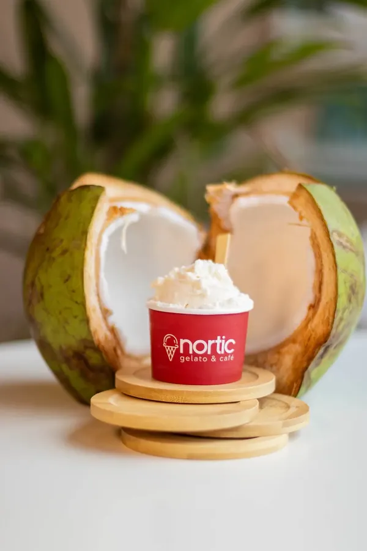

Sorveterias & Paleterias, Cafeterias
Nortic Gelato & Café
Parceiro do guia
Gelatos artesanais sem aromatizantes, corantes e conservantes, com opções sem lactose e sem açúcar. Nota 5,0 no Google. Parque Continental, SP.
- Endereço
- R. Eva Terpins, 250 - Parque Continental, São Paulo - SP, 05327-030
- Horário
- Qua a dom, 12h às 20h; seg e ter fechado
- Telefones
- (11) 91862-1591